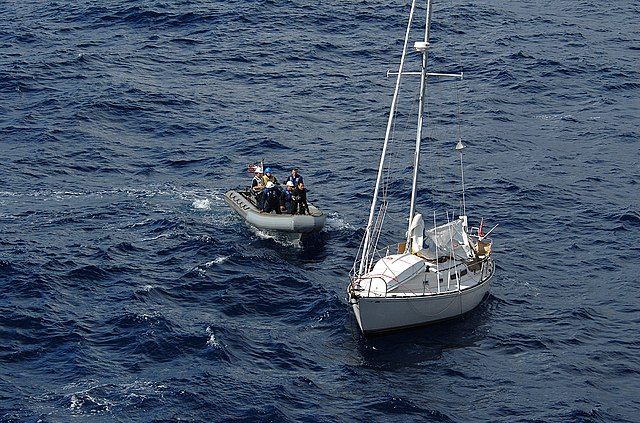
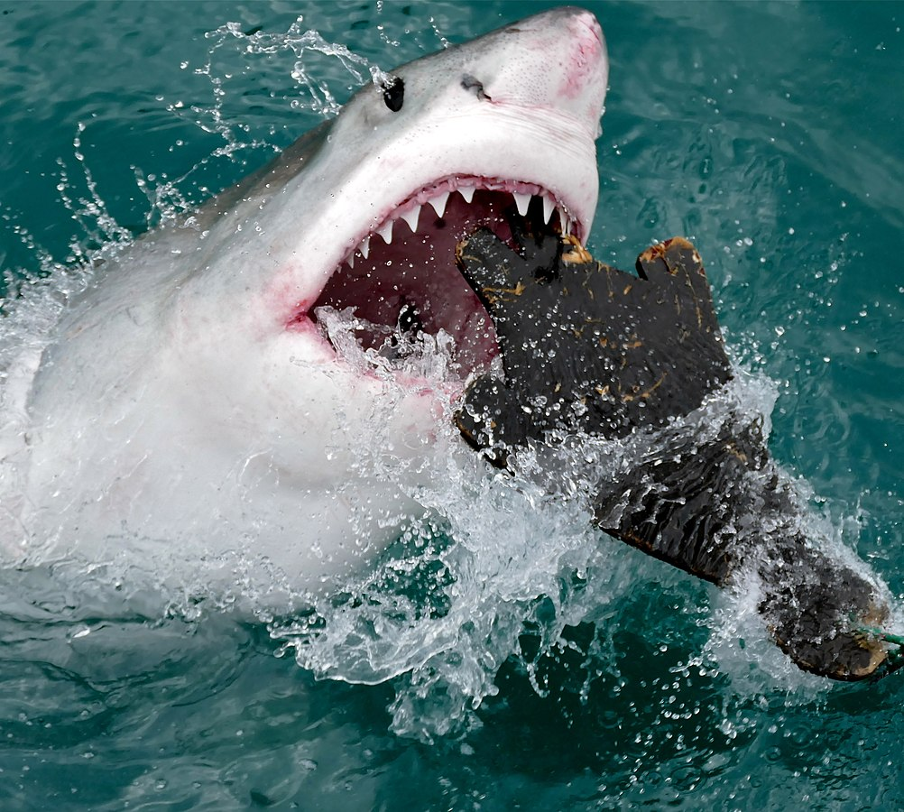
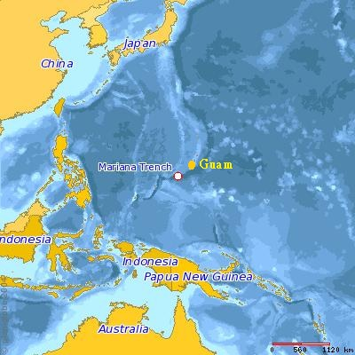
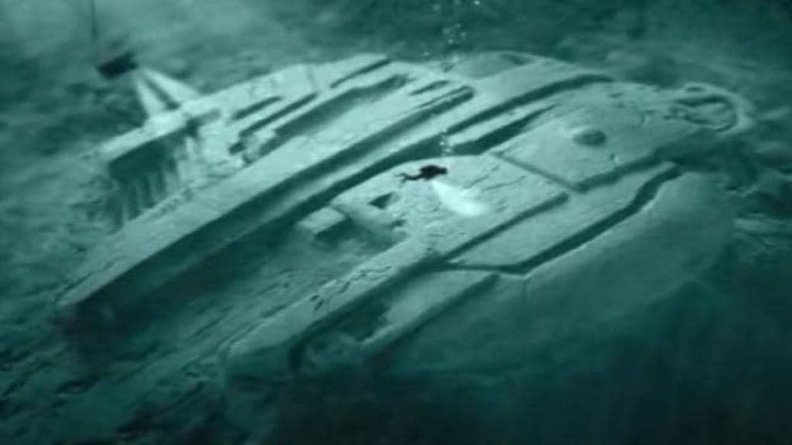
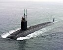
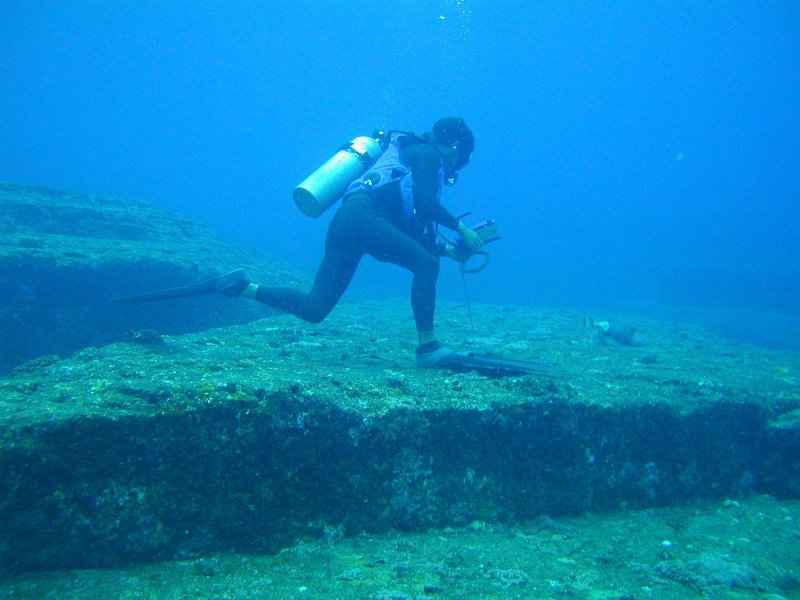
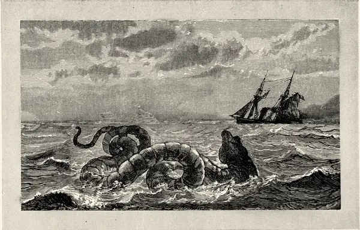
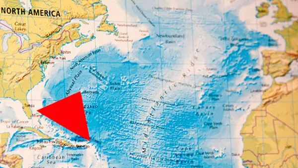

Within the ocean lie many mysterious truths, lingering in the depths, waiting to be uncovered by those who dare to explore.

The Kaz II was a boat that set sail in 2007 from Australia. It was manned by three sailors and was mysteriously found drifting with the motor still running, a powered-on laptop, and a table completely set with no sign of any foul play... oh, EXCEPT FOR THE MISSING CREW! Coroners have speculated what happened to the men but nothing has ever been proven.

In 2003, scientists decided to tag a 9-foot-long great white shark to study temperature changes in the ocean. Weirdly, several months later, the tag recording the information was found on shore. When researchers looked at the tags information, they were stunned. About four months after the tag was put on, the shark seemed to have dove around 1,900 feet, which suggests it was attacked and eaten by something. But what could eat a 9-foot great white? An even bigger shark, some scientists say.

The Mariana Trench is the deepest point in all of our oceans, coming in at 36,201 feet deep. That's right, you could stick Mt. Everest on the bottom and it would be COMPLETELY covered by water with an extra 7,000 feet of extra water on top. Because of the sheer size and pressure, only four expeditions have successfully descended. Who knows what's even down there? There's just too much of it!!

No, that's not the Millenium Falcon. It was discovered by two researchers using a sonar scan in 2011 some 300 feet deep on the ocean floor of the Baltic Sea. The strange shape led many to believe it was some kind of space craft that had crash landed or a weird natural formation. Even crazier, some now speculate it could be some kind of secret war technology.
You know that feeling when you hear a strange noise in the middle of the night? Imagine that, but in the middle of the effing ocean. There are several unexplained noises that have been recorded over the years with two of the most popular being "The Bloop" and "Julia." These sounds have to have been made by very large objects (or possibly creatures), with most scientists believing the sounds are large icebergs scraping the ocean floor. BUT WHAT IF IT'S NOT???

Four separate submarines went inexplicably missing in the SAME exact year. These were the USS Scorpion, a Soviet submarine K-129, a French submarine Minerve, and the INS Dakar. The last two subs disappeared only four days apart. The Minerve has still never been found, even though it only disappeared an hour away from its home port. Is it just coincidence that four giant machines would all have misfortunes the same year, or is it something more sinister?

Like Sebastian said, "The human world is a mess." So why not try life under the sea? Some say that the lost underwater city of Atlantis has been discovered right off of the island of Delos in Greece. An entire planned town was found with several buildings, courtyards, and so many pieces of pottery.

For over twenty minutes, the crew of the HMS Daedalus, a Royal Navy warship, watched what they claim to be a giant, 100-foot-long snake with a dragon's head swim near their boat. Don't trust the Daedalus crew? It was spotted a second time by the American brig Daphne, who even shot at the creature and tried to follow it, only to lose it at sea. Scientists today think they most likely saw a whale, but wouldn't a bunch of experienced sailors know the difference between a whale and a serpent?

Named for the triangular shape of around 500,000 square miles of ocean between Miami, Bermuda, and Puerto Rico, the Bermuda Triangle is one of the most notorious sea legends. When Christopher Colombus first sailed the area he claimed to see a giant ball of light in the sky that crashed into the horizon and made it glow. Soon, all sorts of strange events began being claimed in the area, including several boats disappearing with no one radioing in a distress signal, and in one incident in 1945, an entire squadron of US torpedo bombers vanished into thin air.